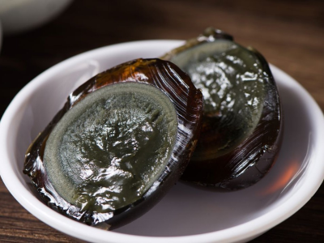
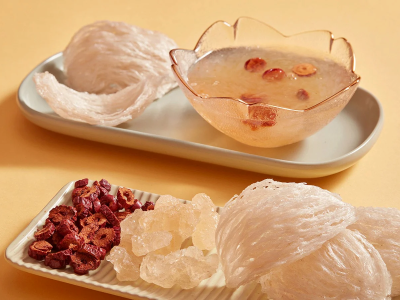
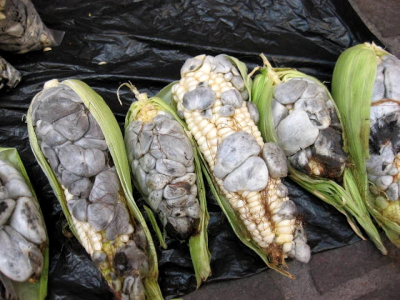

Fantastic Flavorful Funkiness!
What is art? There are many different opinions with compelling arguments in regards to that question. Some say that art has to be objectively beautiful, and others argue that anything is art as long as it expresses something meaningful to someone (anyone really). The term “food” too, is hard to define. Is food anything that tastes good? That can't be right. Anything that is healthy? No. Anything you can put in your mouth and swallow that won't kill you? You'd be surprised. Whatever the case, there are many fascinating things that, whether they should be classified as food or not, people eat all over the world.
A Bit Fishy...


Unconventional Parts


Offspring... :|




God Did Not Intend For Us To Eat This...


